DMRL：面向广告推荐 Skill 优化的文档媒介强化学习
这篇论文研究的不是让大模型直接替代广告排序模型，而是让一个上层优化器持续维护“如何调广告参数”的结构化 skill document，再由冻结的下层任务代理读取文档、生成受约束的参数干预并进入在线实验。论文由上海交通大学与快手合作完成，第一作者主机构为上海交通大学；原文入口为 arXiv:2609.02170，公开日期为 2026 年 9 月 2 日。arXiv 页面没有给出独立代码或项目页，因此本文只能核对论文披露的方法、实验口径与结果，不能确认实现细节或复现成本。
广告参数调优既要平衡商业回报与用户体验，又要面对数日后才成熟的长期结果；现有 LLM 与 skill document 方法仍主要依赖提示式改写，缺少把观测回报归因到某一次具体文档编辑的原则性机制。若再忽略不同人群从一日短期信号到七日长期结果的不同映射，聚合奖励还会系统性偏向多数人群。
1. 背景和问题
广告推荐的参数干预位于模型、策略和业务约束的交界处。一个参数变化可能立刻改变广告曝光、消费或停留时长，也可能在数日后通过用户疲劳、回访和后续消费表现出相反方向。传统人工调参依赖专家把经验写在脑中，再通过多轮在线试验寻找可接受配置：人力随待调参数数量增加，经验难以在不同操作者之间转移，试错也不能保证系统探索。超参数优化虽然能形式化搜索空间，却仍需要专家定义边界、选择目标和处理风险，无法自然承载“何时改哪个参数、为什么这样改、遇到异常如何回退”这类操作知识。
skill document 提供了一个更可维护的接口：把任务流程、决策规则、工具调用约束和经验写成文档，由任务代理执行。问题在于，已有 skill-guided 路线常把优化等同于重新写提示词或重生成整份 skill。一次改写中可能同时更动多条规则，即使后续在线指标改善，也很难判断究竟是哪一处修改产生收益；如果指标恶化，也难以把失败归因到具体位置、动作或内容。DMRL 因此把优化动作收缩为可追踪的原子 patch，每个 patch 由编辑位置、insert/delete/replace 动作和编辑内容组成。研究对象从“生成一段更好的提示词”变成“在受控编辑空间里学习哪些局部修订值得保留”。
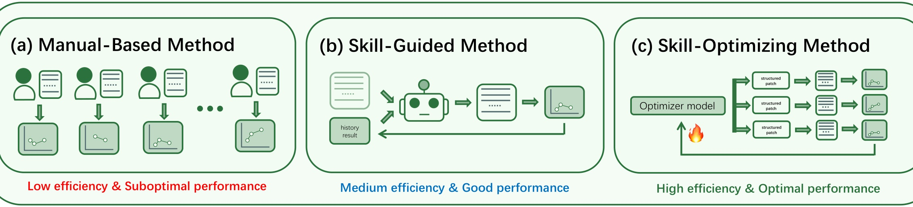
Figure 2 把任务边界画得很清楚。左侧人工范式的效率和性能都受专家试错约束；中间 skill-guided 范式让代理读取文档、利用历史结果，效率提高，但文档改写仍缺少稳定的回报归因；右侧 skill-optimizing 范式新增 optimizer model，并把每轮变更拆成多个 structured patch。图中所谓“optimal performance”是作者对目标范式的示意标签，不是一个已经被图本身证明的实验结论。真正可验证的差异在于：右侧显式暴露可定位、可计算成本的编辑动作，因而可以为每个候选编辑建立 rollout、奖励与优势，而不是只评价整份文本的新旧版本。
第二个难点是时间尺度。论文把干预后一日内观测的 AUD@1d、PES@1d 及一日内多变量波动轨迹称为短期信号；把 AUD@7d、PES@7d 与综合经济价值 LTV 视作七日长期结果。后者必须等待成熟，不能在每次上层策略更新时直接取得。用一日代理替代七日目标会很快，但短期参与、短期货币化与七日结果并不总同向：后续在线表格中，多种方法都出现一日指标为正、七日指标转负的情况。这正是 DMRL 需要独立长期回报预测器，而不能把“当天涨了”直接当成优化奖励的原因。
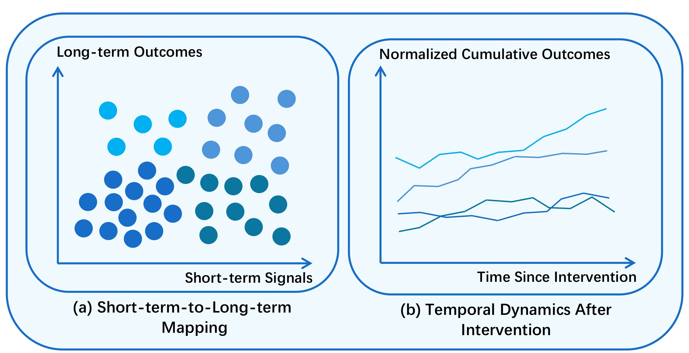
Figure 1 进一步说明长期预测不能只做一个全体用户的回归器。左图用不同颜色的用户点表示：相似的一日短期信号可能对应不同长期结果，群体之间的映射并不重合；右图显示干预后累计结果的时间轨迹也有不同斜率和形状。图里没有提供可读取的数值刻度，因此只能支持“存在显著异质性”这一方向性观察，不能据此估计群体间效应大小。若直接在聚合样本上训练，41.11% 的多数群体更容易主导损失，小群体的非单调或延迟响应会被平滑。论文因此要求模型同时学习跨群体共享规律、群体特定偏差，并从条件相似的历史实验中提取一日动态。
这还带来“观测时间”和“决策时间”的错位。参数 patch 必须尽快决定是否继续探索，但七日结果要等待成熟；如果每轮都等七天，上层学习周期会被拉长，如果只用第一天指标，优化器又可能系统性选择短期漂亮、长期受损的编辑。普通延迟转化建模主要修正尚未成熟的二元标签，DMRL 面对的是连续、多目标回报：参与和货币化既有不同单位，也会在人群和时间上出现方向冲突。LRP 在这里扮演的是代理奖励模型，而不是线上真实结果的替代品；最终评价仍来自七日 A/B。这个区分很重要，因为预测器的准确度、校准和覆盖范围会直接决定 DRPO 学到哪类文档修改。
此外，下层代理若也在迭代中更新，上层很难判断一次指标变化来自 skill patch 还是执行模型行为改变。论文固定下层任务代理，并通过参数白名单和允许范围限制工具调用，使上层动作与实际干预之间尽量保持一致。这个设计降低了信用分配歧义，却也限定了结论：DMRL 学到的是给特定冻结代理使用的文档编辑策略，换成另一底座、工具接口或安全规则后，skill 的语义与效果可能变化，需要重新评估，不能直接视作与代理无关的通用参数策略。
这两个问题最终汇合成一个双层信用分配任务：上层动作是文档编辑，下层动作才是广告参数干预；在线环境先返回一日观测，真实七日结果随后成熟；不同人群对同一干预又有不同反应。DMRL 的解法不是取消在线 A/B，而是把 A/B 置于受控闭环中：冻结下层任务代理以减少执行策略漂移，由 LRP 把一日信号转换为人群感知的七日回报估计，再由 DRPO 比较同批编辑、对照组和编辑风险。这样，文档修改才有机会获得与长期价值一致、又能追踪到具体 patch 的学习信号。
2. 方法
2.1 DMRL 双层闭环与结构化文档接口
DMRL 的上层输入包括当前 skill document、交互上下文与历史编辑结果，输出一组候选原子编辑。每个编辑 (e_i=(\ell_i,a_i,c_i)) 分别给出目标位置、动作类型和内容；确定性 patch applicator 将其应用到原文，得到 rollout skill。下层冻结任务代理解析这个 skill，结合当前实验状态推理参数动作，并通过工具调用送入在线 A/B 环境。论文实验里，下层代理是以 GPT-5.5 为底座的 OpenAI Codex，能操作的参数及取值范围由白名单限制；冻结它的意义是让相邻 rollout 的主要差别来自 skill patch，而不是执行代理自身同时学习。
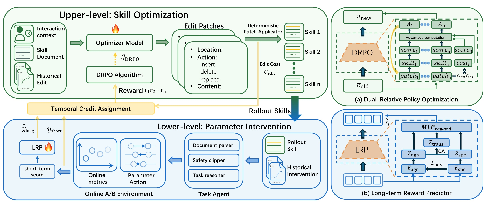
Figure 3 的信息流应分上下两层阅读。上层左侧从 interaction context、skill document 和 historical edit 出发，经 optimizer model 产生 location/action/content patch；中间确定性应用 patch 后形成多个 rollout skills；右侧 DRPO 接收各 rollout 的 score、对照组 score 与 edit cost，计算优势并更新编辑策略。下层把某个 rollout skill 交给文档解析器、安全裁剪器和任务推理器，生成参数动作并进入在线 A/B。环境立即返回 short-term score，LRP 则结合历史干预和一日动态估计长期回报。图右下 LRP 与右上 DRPO 不是并列的两个最终预测器：前者解决时间信用分配，后者解决候选编辑之间、候选与对照之间的动作信用分配。skill document 是两个决策层之间的语义接口，结构化 patch 则是可归因、可计成本的上层动作。
训练和在线使用需要明确区分。LRP 用已成熟七日结果的历史轨迹训练；当新干预只到一日时，它才输出七日回报估计供 DRPO 使用。DRPO 学到的是文档编辑策略，部署时仍必须通过下层代理和在线 A/B 评估候选，而不是离线一次生成永久配置。论文没有说明完整 rollout 需要多少流量、持续多少天或失败回滚细节，因此“工业可部署”可以由实际平台实验支持，但不能被解释为无需线上成本的自动调参。
2.2 Long-term Reward Predictor：异质性表征与历史迁移
LRP 首先把当前样本拆成两路表征。(r_s) 是干预后一日内可得的短期信号，(u) 是人群特征，(\Delta a) 是参数修改。共性编码器刻意不接收 (u)，特定编码器则显式接收它。这样的输入隔离先从结构上限定两路各自能利用的信息，再用后续对抗训练进一步净化共性分支：
符号解释：(z_{\mathrm{agn}}) 表示跨人群共享的短期到长期动态，(z_{\mathrm{spe}}) 表示某个人群相对共享规律的偏差；(E_{\mathrm{agn}}) 与 (E_{\mathrm{spe}}) 是两路编码器。仅从输入中拿掉 (u) 还不能保证共性分支完全没有人群信息，因此后续训练会用对抗判别器进一步压低可辨识性。两路分解的价值是避免“统一编码器把高频人群当作普遍规律”，但也带来边界：若人群标签划分粗糙或随时间漂移，特定分支可能学习到过期分组。
历史迁移部分把每个已经成熟的实验编码为 key-value。key 描述短期水平、人群和干预条件，value 保存该实验一日内多变量轨迹。它要检索的是与当前干预条件相近的早期响应形状，而不是直接复制某个历史七日标签；只有在目标干预发生前已经完全成熟的历史实验才可进入记忆库：
符号解释：(j) 索引历史实验，(\tau_{1d}^{(j)}) 是该实验在第一天内的多变量波动轨迹，(\mathcal M) 是 memory bank，(M) 为记录数。这里的 value 不是七日标签本身，而是更细的一日动态；七日结果用于监督最终预测。实验部分又规定，对某个目标轨迹，memory bank 只能包含其干预前已经成熟长期结果的历史记录，这一点防止未来信息泄漏。
当前样本把两路表征拼接成 query，再对历史 key 做缩放点积注意力。这样，共性规律和人群偏差共同决定“当前实验更像哪些历史实验”，而历史 value 中的一日轨迹只按匹配权重聚合，不改变当前样本自身编码：
符号解释：(K\in\mathbb R^{M\times d_k}) 与 (V\in\mathbb R^{M\times d_v}) 是堆叠的历史 key/value，(d_k) 是 key 维度，(z_{\mathrm{trans}}) 是按相似实验加权得到的历史早期动态。它不是根据用户 ID 找最近邻，而是同时匹配短期信号、人群与参数改动条件；因此可迁移的对象是“在类似干预条件下，第一天轨迹通常怎样演化”。如果历史中没有相似实验，注意力仍会给出归一化权重，所以模型还需要门控限制不可靠迁移。
符号解释：(\beta(q)) 是实例级门值，控制当前样本对历史迁移的依赖；(W_\beta,b_\beta) 是门控参数，(\hat r_l) 是预测的七日长期回报。门值较低时模型更多依赖当前样本的共性与特定表征，较高时吸收相似历史实验的一日动态。论文把该输出用于 rollout reward，但没有披露预测不确定度如何进入 DRPO；如果置信度低的预测和高置信度预测被同等使用，优势估计仍可能放大模型误差。
2.3 DRPO 与两阶段训练
DRPO 先为每个文档 patch 计算编辑成本。位置和动作组合有不同风险权重；内容变化同时从 token 编辑距离与语义距离衡量。这个成本不依赖在线回报，因而在候选被执行前就能确定，可作为所有 rollout 统一的保守约束，并保留位置、动作和内容三部分的审计线索：
符号解释：(w(\ell_e,a_e)) 由编辑位置与 insert/delete/replace 类型决定，(\eta) 权衡表面改动和语义漂移；(x_{\mathrm{old}},x_{\mathrm{new}}) 是原、新文本片段，(\phi) 是句向量编码器。Levenshtein 距离能惩罚大面积重写，余弦距离能发现字面变化小但语义偏转大的情况。编辑成本是风险代理而不是真实安全损失：权重表、句向量模型和阈值若与线上故障模式不一致，小 patch 仍可能改变关键约束。
对同一 skill，优化器采样 (G) 个候选编辑，每个候选经下层任务代理和 A/B 环境得到一日信号，再由冻结 LRP 产生长期回报 (R_i)；并行对照组使用当前最佳配置，得到 (R_0)。同批候选之间的相对好坏与候选对当前最佳配置的增量是两种不同基准，DRPO 把两者放进同一个优势函数：
符号解释：第一项以中位数和 MAD 做批内稳健比较，1.4826 把正态条件下的 MAD 调整到近似标准差尺度；第二项直接衡量处理候选相对并发对照的变化；第三项扣除编辑风险。(\alpha) 平衡两种相对量，(\delta) 防止分母过小，(\lambda_{\mathrm{edit}}) 控制保守程度。与 GRPO 的均值/标准差归一化相比，MAD 项降低极端 rollout 的支配；与只做组内排名相比，对照项把策略更新锚定到实际线上基线。需要注意 (R_0+\delta) 的尺度和符号会影响相对项，论文没有给出这些超参数的敏感性。
LRP 的训练分三段。先令对抗权重为零，预热长期回报预测，使两路编码和 reward head 先学到可用信号；再冻结共性编码器，单独训练人群判别器，使判别头不从随机状态开始对抗；最后解冻并通过 gradient reversal layer 联合训练，在保持长期回报拟合的同时减少共性表示中的人群可辨认信息：
符号解释：(g,\hat g) 是真实与预测人群标签，(D_{\mathrm{adv}}) 是判别器，GRL 前向保持表示、反向对共性编码器乘以负梯度；(r_l) 是成熟七日回报，(L_{\mathrm{adv}}) 是人群分类交叉熵，(\lambda_{\mathrm{adv}}) 控制去人群信息的强度。判别器最小化分类误差，共性编码器经反向梯度使分类更难，从而把人群差异推向 (z_{\mathrm{spe}})。三段式日程避免一开始就让两个目标相互拉扯。
随后冻结 LRP，才训练文档编辑策略。序列化 patch 的每个 token 使用裁剪代理目标，并用 KL 限制策略漂移。虽然一个 patch 的优势在序列级共享，概率比仍按 token 计算，因此模型能沿着位置、动作和内容的序列化表示更新，同时避免一次策略迭代把编辑语言分布推得过远：
其中 (\rho_{i,t}=\pi_\theta(e_{i,t}|e_{i,<t})/\pi_{\theta_{\mathrm{old}}}(e_{i,t}|e_{i,<t}))。符号解释：(e_{i,t}) 是第 (i) 个 patch 序列的第 (t) 个 token，(A_i) 是整项编辑的优势，(\epsilon_c) 是概率比裁剪范围，(\beta) 是 KL 系数。训练时要先等七日标签训练 LRP，再固定它作为代理奖励；推理与在线优化时，LRP只读取当前一日信号和合规历史记忆，DRPO 只更新上层编辑策略，下层任务代理保持冻结。这个顺序把奖励模型的非平稳性与策略学习分开，是 Table 5 所检验的关键设计。
3. 实验结果
3.1 数据、在线部署与指标口径
实验来自一个大规模短视频广告平台。作者按历史行为把用户固定分成 Low-ST Low-LT、High-ST Low-LT、Low-ST High-LT、High-ST High-LT 四组，其中 ST/LT 分别表示短期和长期指标高低。每条样本对应一次参数干预下的用户轨迹，包含参数变化、用户特征、一日短期反馈、人群标签和成熟七日结果。四组轨迹合计 12,002,243 条，由大规模在线流量低比例采样得到；数据按干预时间顺序切分训练、验证和测试，且目标轨迹的 memory bank 只允许使用当时已成熟七日结果的历史记录。
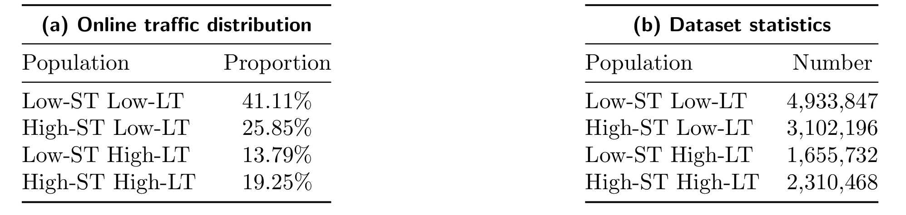
Table 1 左侧在线占比分别为 41.11%、25.85%、13.79% 和 19.25%，右侧轨迹数分别为 4,933,847、3,102,196、1,655,732 和 2,310,468，说明采样后大体保持流量相对分布。最小组 Low-ST High-LT 仍有约 166 万条轨迹，样本绝对量并不小，但它只占 13.79%，统一损失仍可能偏向 41.11% 的 Low-ST Low-LT 组。该表不能证明四组内部没有选择偏差：论文没有公开阈值、分组稳定性或各组的干预覆盖，只能确认训练集没有通过简单均衡采样消除真实分布差异。
在线效果使用 AUD、PES 与 LTV。AUD 是干预后应用使用时长，代理用户参与；PES 是结合转化和实际成本等后验信号校准的预期消费，代理广告货币化；LTV 把参与和货币化换算到综合经济尺度。AUD@1d 与 PES@1d 是一日短期观测；AUD@7d、PES@7d 和 LTV 是七日长期结果。 表中百分比是各自 A/B 实验相对变化，不是指标绝对值。作者用实验前 A/A 用户历史统计做 CUPED 降方差，但没有给置信区间、p 值、流量比例或绝对基线。更重要的是，论文明确说明不同表在互不重叠时间窗、不同流量分配下运行，所以后续只能在同一张表内比较，不能把 Table 2 的 +0.052% 与 Table 6 的 +0.064% 当成可直接复现的同一基线结果。
3.2 主结果：一日信号、七日结果与 LTV 的权衡
主结果分两组控制变量。比较 skill 优化方法时固定 LRP，只替换上层算法为 SAGE、SkillOpt、SKILLRL 或 DRPO；比较长期回报模型时固定 DRPO，只替换 LRP 为 TFT 或 DelayAdapter。这样可以把编辑策略和延迟回报预测的贡献拆开，但这些仍是线上相对效果，不是脱离流量与时间窗的模型固有分数。
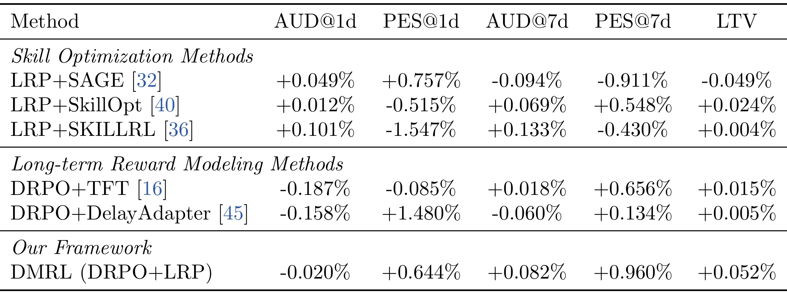
Table 2 中，DMRL 的 AUD@1d 为 -0.020%、PES@1d 为 +0.644%，而七日 AUD@7d 与 PES@7d 分别为 +0.082% 和 +0.960%，LTV 为 +0.052%，是该表最高。这里短期参与略降、短期货币化和两项长期指标为正，恰好说明目标不是让所有一日指标同时上涨。SAGE 的短期两项为正，却出现 AUD@7d -0.094%、PES@7d -0.911%、LTV -0.049%；SKILLRL 虽有 AUD@1d +0.101% 和 AUD@7d +0.133%，PES@1d/PES@7d 分别为 -1.547%/-0.430%，LTV 仅 +0.004%。因此只看一日代理或单一参与指标会误判文档编辑。
与长期建模基线相比，TFT 的 PES@7d +0.656%，但 AUD@1d、PES@1d 分别 -0.187%、-0.085%，LTV +0.015%；DelayAdapter 的 PES@1d 高达 +1.480%，长期 AUD@7d -0.060%、PES@7d +0.134%，LTV +0.005%。完整 LRP 配合 DRPO 的 LTV 比二者分别高 0.037 和 0.047 个百分点。这个差值是表内相对变化之间的算术比较，不代表绝对收入增量。论文把 LTV 超过 0.01% 定义为具有实践意义，但没有提供统计不确定度，所以可以说 DMRL 在作者的业务阈值下取得最优综合结果，不能进一步断言每项差异都统计显著。
3.3 LRP 消融：人群解耦与历史迁移
LRP 消融比较统一编码器 UE、去除 memory bank、两者同时去除以及完整模型。由于这一表也来自单独在线窗口，完整 LRP 的数值和 Table 2 中 DMRL 不同是正常的，解读重点应放在同表相对排序。
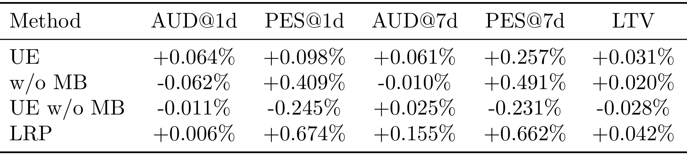
Table 3 中完整 LRP 的 PES@1d +0.674%、AUD@7d +0.155%、PES@7d +0.662%、LTV +0.042%，整体最平衡。UE 的 AUD@1d +0.064% 为表内最高，但 LTV 只有 +0.031%，说明把共性和特定规律压进一个表示，短期参与可以改善，却不一定获得同样的综合长期价值。去掉 memory bank 后，PES@1d/PES@7d 为 +0.409%/+0.491%，AUD@1d/AUD@7d 为 -0.062%/-0.010%，LTV +0.020%，显示只用当前样本编码更容易偏向货币化而牺牲参与。UE w/o MB 的 LTV -0.028%，两项设计同时缺失时最差。
这一消融支持“解耦表征与历史迁移互补”，但不能单独验证 cross-attention 的检索是否真的找到了因果相似实验，也没有比较不同 memory 容量、更新频率或门控校准。更严格的复现应增加人群内预测误差、attention 邻居诊断和随流量漂移的滚动评估。尤其 Low-ST High-LT 只占 13.79%，若线上分组边界变化，固定人群标签和历史 key 的语义可能同时漂移。
3.4 DRPO 消融：稳健组内比较、对照奖励与编辑成本
DRPO 消融逐项移除 MAD normalization（MN）、相对并发对照的 reference reward（RR）与 edit cost（EC），另给出原始 GRPO。因为优势三项分别针对离群 rollout、共同时间波动和激进编辑，关键不是某个短期数值是否最大，而是能否避免七日结果与 LTV 反转。
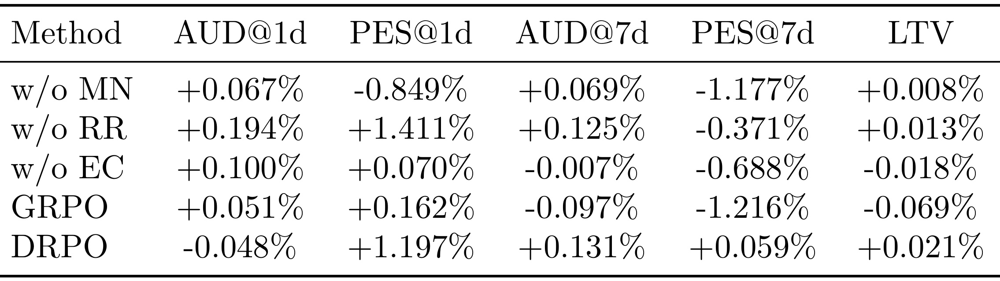
Table 4 中 DRPO 的 PES@1d +1.197%、AUD@7d +0.131%、PES@7d +0.059%、LTV +0.021%，尽管 AUD@1d 为 -0.048%。去掉 MN 后，一日和七日 AUD 为正，但 PES@1d/PES@7d 降至 -0.849%/-1.177%，LTV +0.008%；这符合重尾在线回报会让均值/标准差归一化不稳的解释。去掉 RR 的 AUD@1d +0.194%、PES@1d +1.411% 为表内最强短期响应，PES@7d 却 -0.371%，LTV +0.013%，说明没有并发对照锚点时策略更容易追逐即时变化。
去掉 EC 时 LTV -0.018%，七日 AUD/PES 分别 -0.007%/-0.688%；原始 GRPO 的 AUD@7d -0.097%、PES@7d -1.216%、LTV -0.069%，是表内最差。数据与三项设计动机一致，但仍是组件移除后的端到端在线结果，不能证明每次失败都由公式声称的单一机制引起。论文也没有公开 (\alpha)、(\lambda_{edit})、MAD 分母下限或位置-动作权重表的敏感性，这些参数决定 DRPO 究竟有多稳健、又会不会过度保守。
3.5 两阶段训练为何重要
单阶段方案会让 LRP 与编辑策略一起变化：策略改变干预分布，预测器改变奖励尺度，两个模块互相追逐，容易把当期一日代理放大成不稳定监督。两阶段方案先用成熟历史轨迹训练 LRP，再冻结它训练 DRPO，把 reward function 在策略更新期间固定下来。
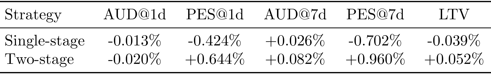
Table 5 显示单阶段的 AUD@1d -0.013%，看起来比两阶段的 -0.020% 略好；但 PES@1d -0.424%、PES@7d -0.702%、LTV -0.039%。两阶段则得到 PES@1d +0.644%、AUD@7d +0.082%、PES@7d +0.960%、LTV +0.052%。这组结果支持“先稳定长期代理奖励再学编辑策略”，也再次说明更好的 AUD@1d 不等于更好的七日价值。两阶段的 AUD@1d 仍为负，说明训练顺序并非让每个短期指标同时改善，而是把优化重心推向货币化、七日参与和综合价值的平衡。该表没有报告训练曲线、LRP 预测误差随策略迭代的变化或两种方案的方差，因此对非平稳性的解释仍是与结果一致的机制推断，而不是直接观测证据。
3.6 骨干规模与 rollout 数量
默认上层优化器采用 Qwen3-8B，每轮采样 8 个编辑 rollout。作者分别改变骨干规模与 rollout 数，用在线指标检验实现敏感性；两组实验仍只能各自在表内比较。
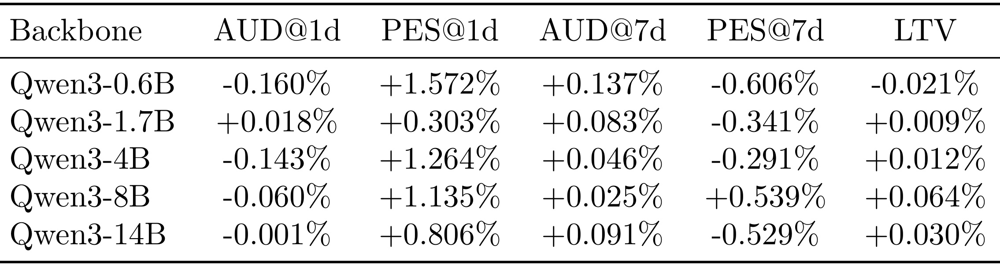
Table 6 中 Qwen3-8B 的 LTV +0.064% 为最高，同时 PES@1d +1.135%、AUD@7d +0.025%、PES@7d +0.539%。0.6B 虽有 PES@1d +1.572% 和 AUD@7d +0.137%，PES@7d -0.606%、LTV -0.021%；1.7B 与 4B 的 LTV 仅 +0.009%、+0.012%。14B 没有继续上升，LTV +0.030%，PES@7d -0.529%。作者据此认为小模型探索能力不足，而更大模型可能产生更丰富、也更激进的编辑。由于表中没有编辑多样性或成本分布，这个解释尚未被中间量直接验证；工程上应同时记录 patch 长度、语义距离、拒绝率和回滚率，而不是只用参数量解释结果。
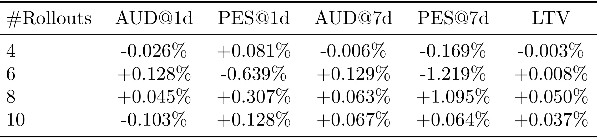
Table 7 中 8 个 rollout 的 AUD@1d +0.045%、PES@1d +0.307%、AUD@7d +0.063%、PES@7d +1.095%、LTV +0.050%，是该表最平衡的设置。4 个 rollout 的 LTV -0.003%，说明候选过少可能探索不足；6 个 rollout 的两项 AUD 为正，但 PES@1d/PES@7d 分别 -0.639%/-1.219%，LTV 只有 +0.008%；10 个 rollout 的 LTV +0.037%，没有超过 8。结果呈非单调关系，不过“10 个候选因冗余而稀释选择”仍需由候选相似度、有效样本量和在线流量成本验证。现有表也不能回答 8 是否在其他参数域、其他流量阶段仍最优。
规模和 rollout 两表共同传达的更稳妥结论是：编辑策略容量与探索宽度都有内部最优点，不能依靠堆模型或加候选单调提升七日价值。值得注意的是，Table 6 的 Qwen3-8B LTV +0.064%、Table 7 的 8 rollout LTV +0.050%、Table 2/5 的 DMRL LTV +0.052% 来自不同在线窗口；它们不是同一实验的重复测量，更不能相加为 +0.166%。缺失绝对基线、流量占比和区间估计时，读者只能保留方向、表内排序和作者设定的 0.01% 实践阈值。
3.7 LRP 的人群级定性分析
最后，作者按四类人群和短期价值分位数比较 LRP 预测与真实 LTV。这比只看聚合 LTV 更接近 LRP 的设计目标，因为它能检查预测器是否把小群体的非单调形状抹平。
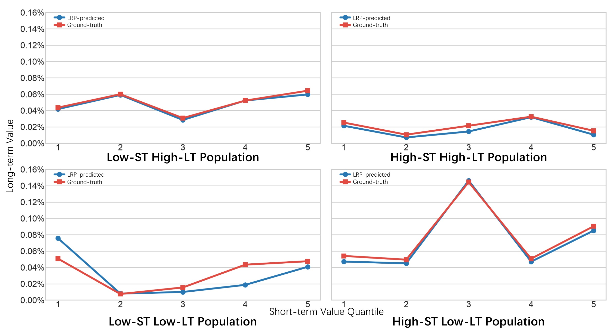
Figure 4 的上排是 Low-ST High-LT 与 High-ST High-LT，下排是 Low-ST Low-LT 与 High-ST Low-LT；横轴为短期价值的 1–5 分位，纵轴为长期价值。Low-ST High-LT 两条曲线几乎重合，论文报告 MAE 0.0019%，最大偏差在第五分位 0.0046%；High-ST High-LT 的 MAE 为 0.0039%，存在轻微系统性低估。High-ST Low-LT 在第三分位出现明显峰值，LRP 仍能跟随其上升与回落，MAE 0.0044%，说明模型没有把所有群体强行拟合成单调关系。
误差最大的是 Low-ST Low-LT：第一分位预测高估 0.0250%，第四分位低估 0.0247%，尽管总体形状仍相近。这一点提示“捕获人群趋势”不等于每个分位都校准良好。图只展示少量分位点和样例分布，没有置信带、样本量或跨时间稳定性，不能据此判断尾部群体的预测风险。更完整的线上监控应把人群内 MAE、校准误差、门控值、检索邻居新鲜度和最终七日残差联合起来，并在流量结构变化时重新检查固定分组。
综合实验能够支持三层结论：第一，DMRL 在 Table 2 的同窗 A/B 中取得最高 LTV，并在短期参与略降时保住七日参与和货币化；第二，LRP 的解耦表征、memory bank 与 DRPO 的三项优势修正都有对应消融；第三，两阶段训练、8B 骨干和 8 rollout 在各自窗口中表现较好。但论文没有给出绝对业务基线、统计显著性、在线时长、流量预算和跨时期复验，因此证据强度应表述为“大规模平台内的在线相对改进与消融一致”，而不是对所有广告系统的普遍因果定律。
4. 总结
DMRL 最有价值的抽象，是把可读文档从“给代理看的静态提示”提升为强化学习动作空间。上层只产生可定位的结构化 patch，下层执行代理冻结且受白名单约束；LRP 负责从一日信号预测七日回报，DRPO 负责在同批候选、并发对照和编辑成本之间分配信用。这样，长期目标、在线对照和变更风险都进入编辑策略，而不再由优化器凭自然语言反思自行判断。对推荐系统而言，这一接口适合承载调参规则、实验流程与安全约束；对大模型 Agent 而言，它展示了如何给 skill 自演化增加可审计动作和外部环境反馈。
4.1 我的判断与可迁移点
论文的优势在于问题、方法和线上证据相互对齐：Figure 1 显示人群异质性，LRP 用分解与历史迁移回应；在线回报重尾且有处理-对照结构，DRPO 用 MAD 与相对对照回应；单阶段奖励漂移，Table 5 支持先训练再冻结。迁移到其他推荐链路时，最值得保留的不是特定广告指标，而是三条原则：把代理可修改内容限制为结构化、可回滚的局部动作；把短期代理与成熟长期目标分开建模；把新策略的收益锚定到并发对照，并为变更本身计成本。对于召回、排序或 RAG 策略文档，还应把线上硬约束、离线守门指标和异常回退写进 patch schema。
4.2 局限、风险与后续跟进
当前至少有六个边界。第一，四类人群由固定历史规则定义，分组阈值和漂移鲁棒性未披露，population-specific 分支可能固化旧结构。第二，LRP 输出点估计，没有显式不确定度；奖励误差可能被 DRPO 当成真实优势。第三，编辑成本依赖人工风险权重、Levenshtein 距离和句向量余弦距离，未必覆盖删除安全约束等小字面、大后果事件。第四，表 2–7 缺少绝对基线、置信区间、p 值、流量比例与实验持续时间，只能做表内相对比较。第五，所有证据来自同一短视频广告平台，跨业务、跨参数空间和跨季节外推仍未验证。第六，代码、数据和独立项目页均未开放，任务代理白名单、patch schema、超参数及失败回滚难以复现。
后续至少应跟进四项验证。其一，等待代码或补充材料，核对人群切分、LRP 网络、memory 更新和 DRPO 超参数，并复现时间切分下的人群内校准。其二，把 LRP 改为带区间或分位数的回报预测，让低置信度 rollout 在优势中降权，观察是否减少七日反转。其三，记录每个 patch 的位置、动作、token/语义成本、在线拒绝和回滚，检验编辑成本是否真正预测操作风险。其四，在多个非重叠时间窗和流量阶段重复同一配置，报告效应区间与异质性，而不是只比较一次表内百分点。只有这些证据补齐后，才能判断 DMRL 是特定平台上有效的闭环，还是可稳定迁移的通用 skill optimization 方法。